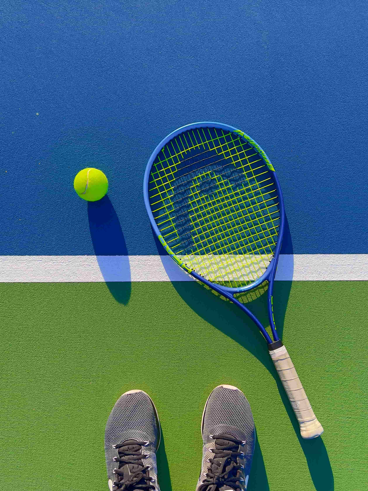
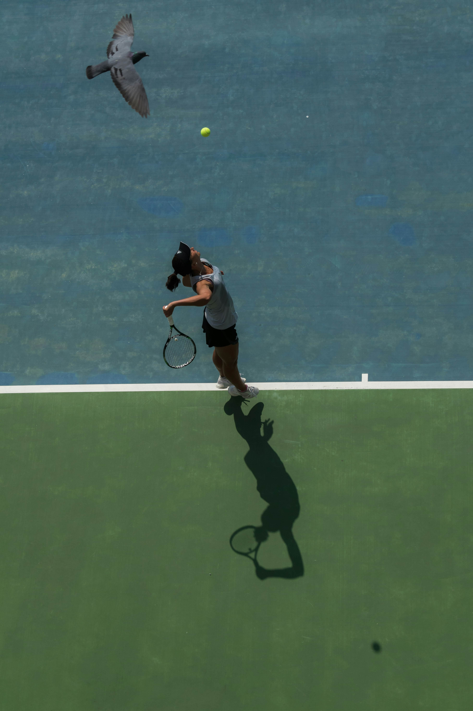
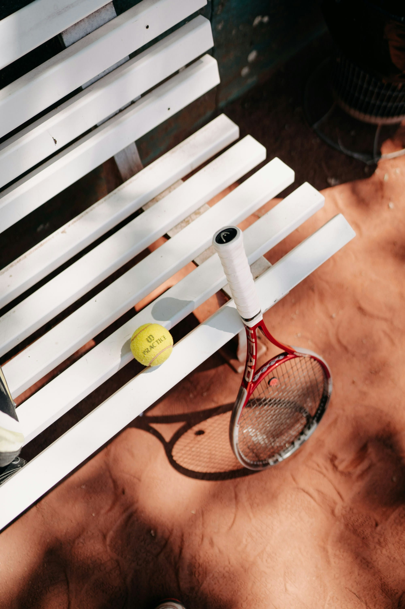

What is Tennis?
Tennis is a fantastic way to stay active, and while it looks like a lot of running and swinging, it’s really a game of rhythm and placement. The history of tennis is a fascinating journey from an eccentric pastime for monks and royalty to a multi-billion dollar global sport. It can be broadly divided into three major eras.
-
Ancient Roots: "Real Tennis" (12th – 16th Century)

Before there were rackets, there were palms. Jeu de Paume: Originating in France, monks played a game called "game of the hand" by hitting a ball over a rope in monastery courtyards. The "Tennis" Name: Legend says it comes from the French word "Tenez!" (meaning "Receive!" or "Take it!"), which players would shout before serving. Royal Obsession: King Henry VIII of England was a massive fan. This original version—played indoors with lopsided rackets and walls you could hit off of—is now called "Real Tennis."
-
The Birth of Lawn Tennis (19th Century)

Modern tennis as we know it was born when the game moved outdoors. 1873: Major Walter Wingfield patented "Sphairistikè" (Greek for "the art of playing ball"). He created a portable kit that included a net, rackets, and a court shaped like an hourglass. 1877: The All England Club in Wimbledon held the first-ever tournament to raise money to repair a broken pony-drawn roller. They squared off the court boundaries, creating the rectangular shape we use today. Global Spread: British colonials and travelers spread the game to the U.S. and Australia, leading to the creation of the other three Grand Slams by 1905.
-
The "Open Era" Revolution (1968 – Present)

This is the most critical turning point in tennis history. Amateur vs. Pro: For decades, Grand Slams were strictly for amateurs. If a player took money for playing (becoming a "pro"), they were banned from the majors. 1968: Tired of seeing the best players banned, the sport "opened" up. The Open Era began, allowing professionals to compete against amateurs for prize money. Technological Shift: In the 1980s, the sport moved away from traditional wooden rackets to graphite and carbon fiber. This allowed players to hit with significantly more power and "topspin," changing the game from a delicate touch-sport to a high-velocity power-sport.